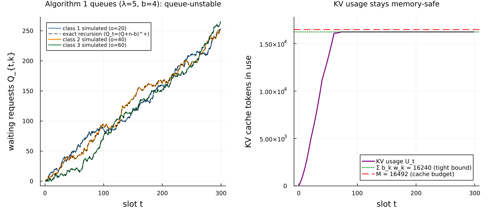
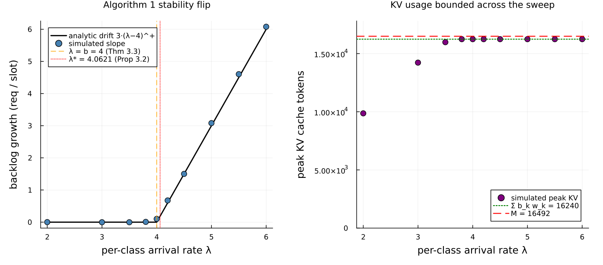
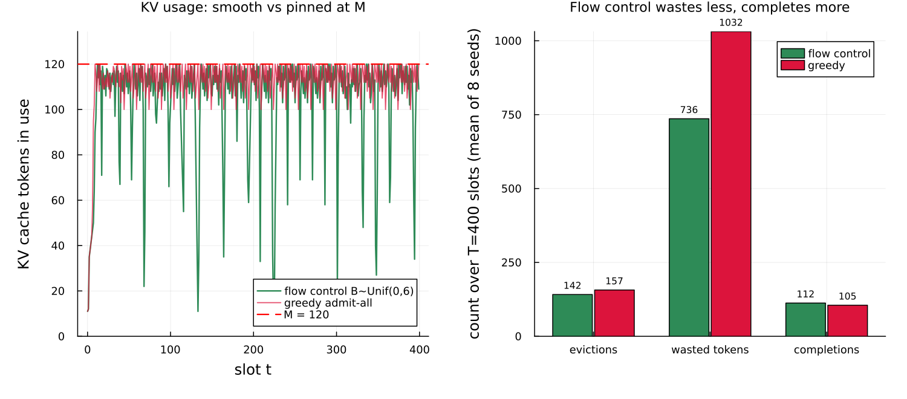

Flow-controlled LLM inference as a round station
This page walks through examples/dong2026_flow_control.jl: a model of an LLM inference server whose scarce resource is GPU memory, built on Concourse's round-based token service and used to reproduce the synthetic experiment of Dong & Cao, "Flow-Controlled Scheduling for LLM Inference with Provable Stability Guarantees" (arXiv:2604.11001, arxiv.org/abs/2604.11001).
This paper is a preprint — it has not yet been peer reviewed — so treat its numbers as the authors' reported values, not settled results. Two of its policies ship with Concourse as ClassBudgets (the paper's Algorithm 1) and FlowControl (Algorithm 2), and the Concourse test suite already reproduces the paper's core identities. This example turns those into a runnable, figure-producing walkthrough.
Some vocabulary first
A few terms are needed before the model makes sense.
- LLM = large language model: a program that generates text one word-piece (token) at a time.
- GPU = graphics processing unit: the specialized processor that runs the model. Its memory is limited and expensive.
- KV cache = key–value cache. To generate each new token, the model needs the "key" and "value" vectors it already computed for every earlier token in the request. Rather than recompute them every step, the server stores them in GPU memory — the KV cache. This store grows by one entry for every token a request has processed and is freed only when the request finishes. So a request that arrived with a prompt of
ltokens and has since generatedjoutput tokens occupiesl + jcache entries. The sum over all in-flight requests must stay under a hard budgetM(the GPU memory set aside for the cache). If it would overflow, the server must evict a request — discard its cached work — which wastes everything that request had computed. - Prefill and decode: serving a request has two phases. Prefill reads the whole prompt (all
linput tokens) in one shot; decode then generates output tokens one at a time. Both consume cache; the paper's timing model charges time only to decode.
The central tension: to use the GPU well the server processes many requests at once (batching), but every active request holds growing cache, so admitting too many at once can overflow memory and force wasteful evictions.
The paper's model
The paper discretizes time into slots, one slot per decode iteration. It tracks each request by a triple (l, o, t): prompt length l, output length o (how many tokens it will generate), and arrival slot t. Each slot:
- New requests arrive and join a waiting queue — they hold no cache yet.
- The scheduler activates some waiting requests, moving them into the active set; each activated request begins holding cache.
- Every active request generates exactly one output token this slot. A request that reaches its
o-th token completes and frees all its cache at the end of the slot. - At all times the total cache usage
U = Σ (l + j)over active requests must stay≤ M.
The one idea of the paper is flow control: cap how many requests may be activated per slot. Admitting requests smoothly instead of in bursts keeps U from spiking, which keeps the system away from overflow.
Two settings, two algorithms:
- Algorithm 1 (known output length). Requests fall into
mclasses by their(l, o). Each slot, for each classk, activate up tob_kwaiting requests (first come first served). Because the per-slot admission per class is capped atb_k, the active memory is bounded and — if the budgets satisfy the paper's inequality — the cache never overflows and no eviction ever happens. - Algorithm 2 (unknown output length). Output length is not known at arrival, so the scheduler cannot classify. Each slot it draws a single global activation budget
B_t, activates up toB_twaiting requests, and then, if memory still overflows, evicts active requests LIFO (last in, first out — the most recently activated first) with full progress reset, untilU ≤ M. Evicted requests return to the queue and must regenerate everything when re-admitted.
Why this is a round station
Concourse's Rounds capability is exactly this iteration-level batching: one station-level clock per slot, per-job integer work counters, and a policy hook at each slot boundary that reads the waiting line and active set and returns admissions, evictions, and per-job token allocations. The paper's token model is the simplest timing case:
- duration is a
Diracat1.0— every slot lasts one time unit, regardless of batch composition (prefill costs memory but, in this model, no time); - there is one work phase, the output-token count
o, snapshotted into a counter at activation and decremented by one each slot the request is active; - the prompt length
lis an ordinary mark — it costs cache but is never "worked off."
The two shipped policies are the two algorithms verbatim. Algorithm 1 is ClassBudgets(b; class); Algorithm 2 is FlowControl(Bdist, M; prompt), which draws its budget through the round's draw source (so it replays deterministically) and does the KV accounting and LIFO eviction internally.
Here is the three-class model of the paper's synthetic experiment:
function dong_three_class(; b = (4, 4, 4))
net = QueueNetwork(param_names = (:lambda,))
for (k, (l, o)) in enumerate(((10, 20), (10, 40), (10, 60)))
source!(net, Symbol(:arrive, k);
interarrival = Law(:Exponential, scale = inv(Param(:lambda))),
mark = MarkLaw(class = Law(:Dirac, value = Const(Float64(k))),
l = Law(:Dirac, value = Const(Float64(l))),
o = Law(:Dirac, value = Const(Float64(o)))))
route!(net, Symbol(:arrive, k), Always(:gpu))
end
station!(net, :gpu;
rounds = Rounds(policy = ClassBudgets(b; class = :class),
duration = Law(:Dirac, value = Const(1.0)),
work = (:o,)))
sink!(net, :done)
route!(net, :gpu, Always(:done))
compile(net)
endEach of the three classes is its own Poisson source stamping the marks class, l, and o; they all feed one round station under ClassBudgets.
The workload numbers
The paper's synthetic classes are (l, o) = (10, 20), (10, 40), (10, 60), each arriving as an independent Poisson stream of rate λ = 5 per slot, with cache budget M = 16492 (their stated scale for Llama2-70B on two A100 GPUs) and activation budgets b = (4, 4, 4).
The minimum KV workload of one class-k request is the total cache-entry- slots it must consume to finish:
\[w_k = \sum_{j=1}^{o^{(k)}} (l^{(k)} + j) = l^{(k)} o^{(k)} + \tfrac12\!\left(o^{(k)} + (o^{(k)})^2\right).\]
For the three classes this is w = (410, 1220, 2430). Two inequalities from the paper use these weights, and the example checks both:
- Proposition 3.2 (necessary condition for stability). No scheduler of any kind can keep the system stable if
Σ λ_k w_k > M. WithΣ w_k = 4060, the boundary isλ* = M / Σ w_k = 16492 / 4060 = 4.0621. - Theorem 3.3 (Algorithm 1 is sufficient for stability). Algorithm 1 keeps both the cache safe and the queues stable when
Σ b_k w_k < Mandb_k > λ_k. The first part isΣ b_k w_k = 16240 < 16492— the cache bound, tight. The second part,b_k > λ_k, needsλ < 4for integer budgetsb = 4.
Notice the tension at the paper's own λ = 5: the cache bound holds (16240 < 16492, so memory is safe), but b = 4 < λ = 5, so Theorem 3.3 does not apply and the waiting queues are unstable — latency grows without bound. That is deliberate. The synthetic experiment lives in a regime where Σ λ_k w_k = 20300 > M, so by Proposition 3.2 no algorithm can be queue-stable; the whole point is that flow control still keeps memory smooth and predictable while greedy admission thrashes on evictions. The example makes both facts visible: the queue grows, and the cache never overflows.
The oracles
Two closed forms drive the validation.
The exact decoupling recursion (Algorithm 1). Because Algorithm 1 has no memory check, the classes never interact: each class's waiting queue follows the scalar recursion
\[Q_{t,k} = (Q_{t-1,k} + n_{t,k} - b_k)^+,\]
where n_{t,k} is the number of class-k arrivals in slot t. Given the recorded arrival times this is a deterministic sequence, and the simulated per-class queue must match it slot for slot — an exact identity, not a statistical one.
The stationary mean queue (stable regime). When λ < b, the recursion is a positive-recurrent reflected random walk (Poisson increments, deterministic drain b). Its stationary distribution — and hence E[Q] — is computed by power-iterating the transition matrix on a truncated state space. The example compares the simulated time-average queue to this E[Q] at four standard errors, in the stable regime λ = 3.
Validation
Running the script prints a table. The deterministic rows are checked exactly; the stochastic rows are checked at four standard errors (|z| ≤ 4) using batch means from one long run:
check simulated target verdict
Alg 1 decoupling identity (129 slots) matches recursion exact PASS
Alg 1 peak KV usage (tokens) 16240 16240 PASS
Σ b_k w_k = 16240 < M = 16492 ? 16240 < 16492 yes PASS
Prop 3.2 boundary λ* = M / Σ w_k 4.0621 4.0621 PASS
Alg 1 stable E[Q] class 1 (λ=3, 4 SE) 0.773 ± 0.038 0.801 PASS (|z|=0.74)
Alg 1 stable E[Q] class 2 (λ=3, 4 SE) 0.793 ± 0.042 0.801 PASS (|z|=0.19)
Alg 1 stable E[Q] class 3 (λ=3, 4 SE) 0.814 ± 0.040 0.801 PASS (|z|=0.33)
Alg 1 token throughput (λ=3, 4 SE) 360.25 ± 1.76 360.0 PASS (|z|=0.14)
Alg 2 KV usage never exceeds M=120 max U = 120 ≤ 120 PASS
Alg 2 evictions actually exercised 143 evictions > 0 PASSThe exact rows are the strongest: the simulated per-class queue reproduces the scalar recursion at every one of the ~129 slots, and the peak cache usage is exactly 16240, the paper's inequality-(2) bound hit tight by the saturated budgets. (Your printed numbers for the stochastic rows will vary slightly with seed but pass the same |z| ≤ 4 test.)
Figure 1: the synthetic experiment at λ = 5

The left panel plots the three per-class waiting queues over the first 300 slots at the paper's λ = 5. The simulated queues (solid) sit exactly on the scalar recursion (dashed black) and grow roughly linearly: with b = 4 < λ = 5, each class accumulates about one extra waiting request per slot. This is the queue-unstable regime Proposition 3.2 predicts.
The right panel plots the KV cache usage U_t over the same run. It stays flat, capped by the tight bound Σ b_k w_k = 16240 (green dotted) and comfortably under the budget M = 16492 (red dashed). This is the paper's point in one picture: even though the queue is unstable, memory is perfectly safe — Algorithm 1 never overflows the cache, so it never wastes work on eviction. The instability is in latency, not in memory.
Figure 2: the stability flip

The left panel sweeps the per-class arrival rate λ and measures the backlog growth rate — how fast the total waiting count rises, in requests per slot. It is essentially zero below λ = 4 and then climbs linearly, tracking the analytic drift 3·(λ − 4)^+ (three classes, each with per-slot drift λ − b). Two boundaries are marked: λ = b = 4, Algorithm 1's own sufficient condition (Theorem 3.3), and λ* = 4.0621, the necessary condition for any scheduler (Proposition 3.2). The gap between them is real: with integer budgets you cannot raise b to 5 without violating the cache bound (5 × 4060 = 20300 > M), so between λ = 4 and λ* = 4.0621 there is no admissible Algorithm-1 budget that keeps the queue stable.
The right panel shows the peak KV usage across the same sweep. It never exceeds the tight bound 16240, no matter how unstable the queue becomes — the cache safety is structural, independent of load.
Figure 3: what flow control buys (Algorithm 2)

Now the output length is unknown, so the scheduler runs Algorithm 2: FlowControl. One class of requests (l, o) = (10, 15) arrives at λ = 1 into a small cache M = 120, which overloads it. We compare two activation budgets:
- flow control: a drawn budget
B_t ~ DiscreteUniform(0, 6), mean 3 — the paper's smooth admission; - greedy admit-all: a large constant budget, which admits everything waiting each slot. This is the paper's own remark that "when
bis large, the algorithm degenerates to a greedy algorithm with a LIFO eviction rule."
The left panel plots the cache trajectory. Flow control varies smoothly below M; greedy pins the cache at M and evicts on almost every slot. The right panel totals the cost over the run (averaged over eight seeds): greedy triggers more evictions, wastes far more tokens to progress-resets (work it computed and then threw away), and — because of that waste — completes fewer requests. Controlling the activation rate buys smoother memory and less wasted computation, which is exactly the paper's thesis.
Note this compares against a single greedy baseline, not the paper's full benchmark suite (α-protection, MC, MC-SF, Amin) or its Gurobi hindsight- optimal solutions. Those need separate implementations and an integer-program solver, and are out of scope here.
Honest caveats
- This is a preprint. The results above reproduce the paper's synthetic Section 4.1 setup and its two proven inequalities, but the paper itself has not been peer reviewed.
- The real-trace experiment (Section 4.2) is excluded. There the paper replaces the one-slot
Diractiming with Microsoft Vidur, an external LLM-serving simulator that computes each batch's wall-clock time from its exact prefill/decode composition. There is no published closed form for that timing, so it cannot serve as an oracle; the synthetic experiment is the reproduction target. - The published constants are used as-is. Unlike the calibrated service line in the M/G/1 example, every number here — the class lengths,
λ,M, andb— is taken directly from the paper's Section 4.1. The only derived constant,Σ b_k w_k = 16240, is recomputed in the script so it is auditable. λ = 5is queue-unstable by design. The synthetic experiment is a finite-horizon overload study, not a stable steady state. The stochastic validation rows therefore use a separate stable point (λ = 3), where a stationary distribution actually exists.
What this demonstrates about Concourse
- Round policies are the paper's algorithms. Both
ClassBudgetsandFlowControlare a few dozen lines over theRoundView, and they reproduce the paper's exact decoupling identity and eviction dynamics without any special-casing in the engine. - The token-level model is just a round station with a unit
Diracduration. Discrete-time slots, one token per active request per slot, and prefill-as-a-mark all fall out of the general round lifecycle. - Exact structural identities are checkable from the record. The decoupling recursion, the tight 16240 cache bound, and Algorithm 2's full-recomputation accounting are all read back by folding over the recorded firings — the record carries everything, including the
FlowControlbudget draws.
Running it
julia --project=examples examples/dong2026_flow_control.jlIt prints the validation table and writes three figures to both docs/figures/ and docs/src/manual/figures/. Total runtime is a few minutes.